EXPEDIÇÃO PELO CERRADO
Jalapão
Dias de estrada, fervedouros, dunas e natureza preservada no coração do Cerrado.
Conhecer esta experiência →
A EXPERIÊNCIA
Aventura de verdade no coração do Cerrado.
Fervedouros onde você flutua, dunas alaranjadas, cachoeiras e rios: o Jalapão é uma imersão em paisagens remotas, guiada e feita sem pressa.
Roteiro sugerido
Ponte Alta e cânions; Cachoeira da Velha e Dunas; fervedouros e Cachoeira do Formiga; comunidade Mumbuca; retorno a Palmas.
O que pode estar incluído
Estes serviços podem compor sua proposta. A contratação e as inclusões são confirmadas antes da reserva.
- Transporte em veículo 4x4 e logística da expedição
- Hospedagem
- Café da manhã, almoço e jantar
- Guia local e passeios definidos na proposta
- Entradas dos atrativos do roteiro
- Seguro aventura
O que não está incluído
- Aéreo, salvo quando indicado
- Despesas pessoais
A ordem dos passeios pode mudar por clima, estradas e vagas nos atrativos. A disponibilidade é confirmada antes da reserva.
Como funciona
Conte seu período, perfil, preferências e orçamento pelo WhatsApp. A Rud Viagens organiza uma proposta com roteiro, serviços e condições. O planejamento está incluído na contratação.
Quando acontece
As datas e a duração são combinadas na proposta, conforme disponibilidade e época da viagem. Os roteiros apresentados são sugestões para seu planejamento.
Informações importantes
Antes da reserva, confirme inclusões, exclusões, deslocamentos e o preparo necessário para as atividades. Durante a viagem, você tem contato direto com Rudnei pelo WhatsApp, com disponibilidade combinada antes do embarque.
Quer viver o Jalapão?
Falar com a Rud Viagens no WhatsApp →FOTOS DO DESTINO
O que espera por você
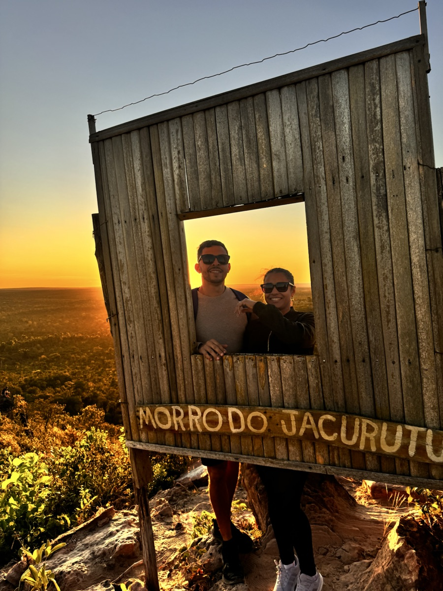
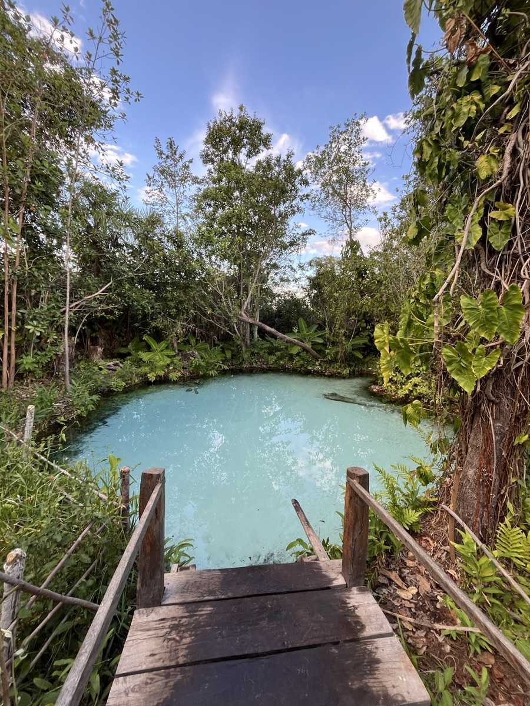
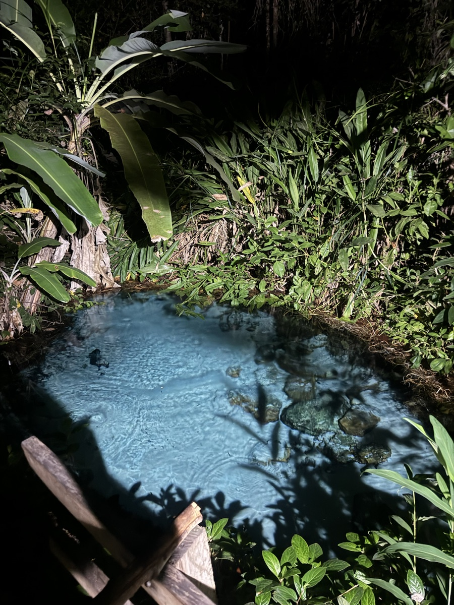
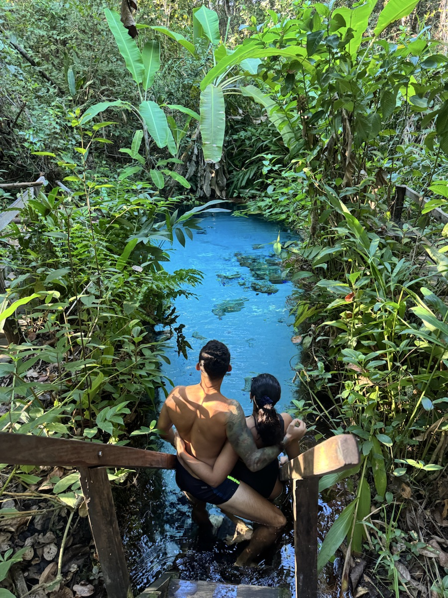
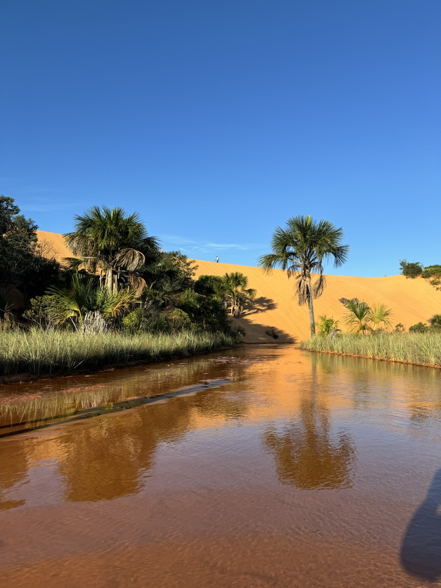
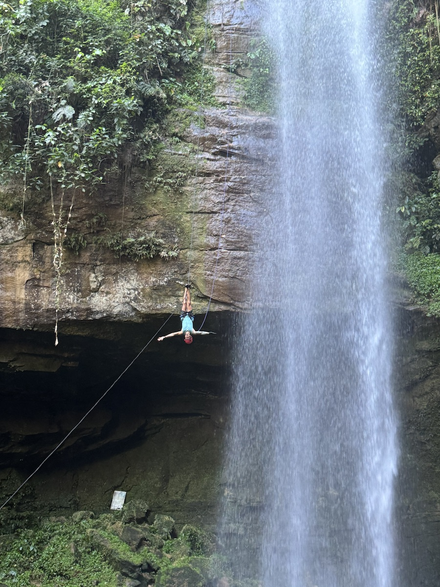
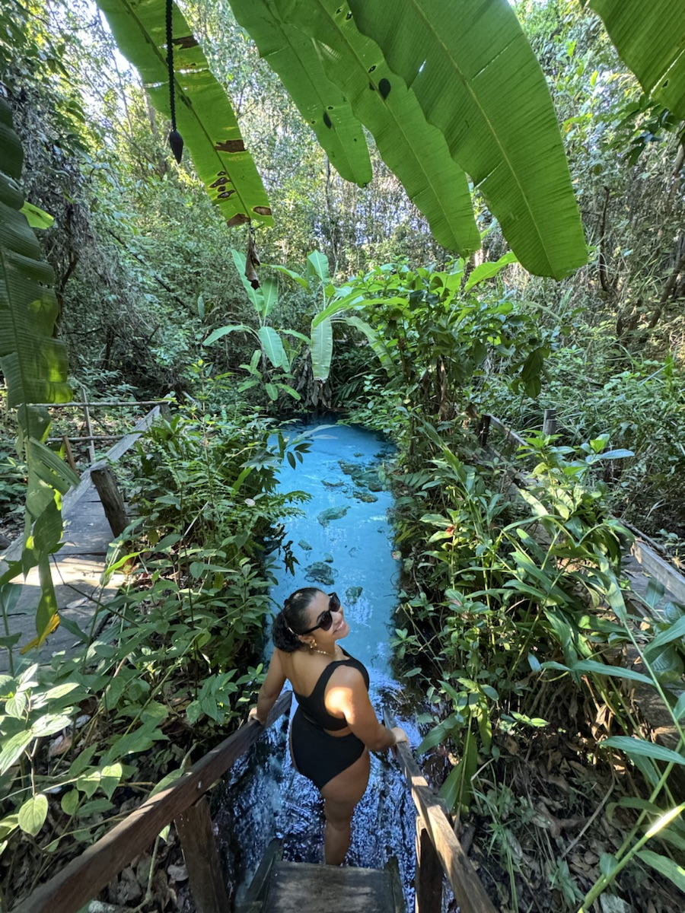
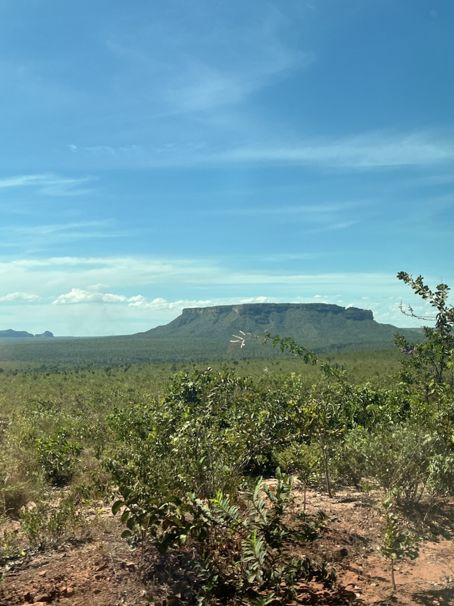
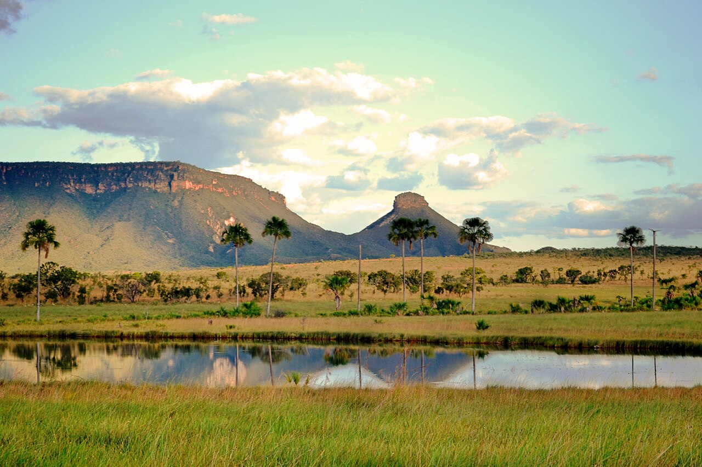
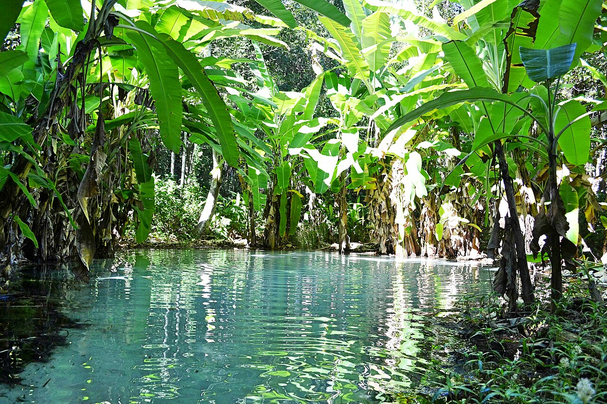
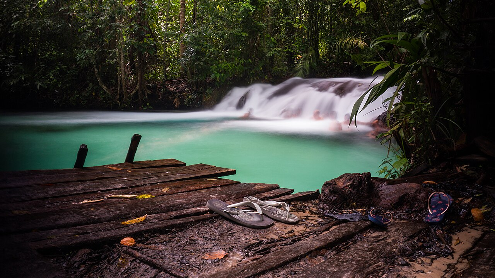